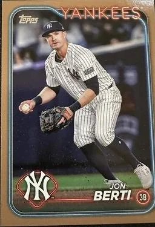

Jon Berti "Birdman"
Career Highlights & Facts
(Facts are AI-generated and may require verification)
- Led the National League in stolen bases during the 2022 season.
- Drafted by the Toronto Blue Jays in the 18th round of the 2011 MLB Draft.
- Recorded a career-high 41 stolen bases while playing for the Miami Marlins in 2022.
Would you like to find out more about Jon Berti?
Career Totals
| WAR | AB | H | HR | BA | R | RBI | SB | OBP | SLG | OPS | OPS+ |
|---|---|---|---|---|---|---|---|---|---|---|---|
| 8.5 | 1536 | 393 | 24 | .256 | 232 | 128 | 108 | .333 | .357 | .690 | 89 |
Statistics via Baseball-Reference.com
The Original Clue